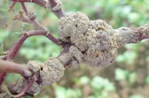
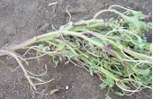
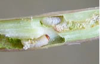
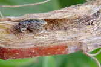

| Home |
| PEST OF AMARANTHUS |
mAJOR PESTS |
| 1. Amaranthus stem weevil |
| 2. Amaranthus caterpillar or webber |
mINOR PESTS |
| 1. Leaf webber |
| 2. Leaf webber |
| 3. Tortoise beetle |
| 4. Grasshopper |
| 5. Leaf twisting weevil |
| 6. Aphids |
| 7. Mealy bugs |
| 8. Thrips |
| Questions |
| Download Notes |
PESTS OF AMARANTHUS :: MAJOR PESTS :: AMARANTHUS STEM WEEVIL
1. Amaranthus stem weevil: Hypolixus truncatulus (Curculionidae: Coleoptera)
Distribution and status : Specific major pest. Widely distributed in India and neighbouring countries. It attacks both wild and cultivated crops and leafy vegetables with large leaves.
Damage symptoms : Grubs bite into stems, feed on pith region making irregular zigzag tunnels and fill with excreta. Stems split longitudinally. Plants dry completely. Adult feeds on tender leaves, makes circular holes in stems, branches and mid-ribs. Attack causes stunting of plants, twisting and swelling of branches and stem and suppression of shoot and leaf production.
|  |  |
Hypolixus truncatulus - Damage Symptoms 1 |
Hypolixus truncatulus - Damage Symptoms 2 |
Bionomics : Females lay eggs singly in each hole and cover holes with secretion. A female lays 30-34 smooth, oval and pale yellow eggs, egg period 4 to 10 days. A single stem contains 17-20 grubs in it. Grubs are stout, curved, apodous and white in colour. Grub stage lasts for 12 - 24 days. Full-fed grubs form a greyish-brown hard compact gall like chamber and pupate therein. On emergence, they remain inside the stem for 5 to 6 days, then cut epidermal membrane and emerge out. Adults are ash-grey in colour, with elbowed antennae and brown elytra.
|  |  |
Hypolixus truncatulus - Bionomics 1 |
Hypolixus truncatulus - Bionomics 2 |
IPM
- Collect and destroy wild amaranthus hosts in the vicinity of cultivated crop.
- Collect and destroy affected plant parts along with grubs and adults